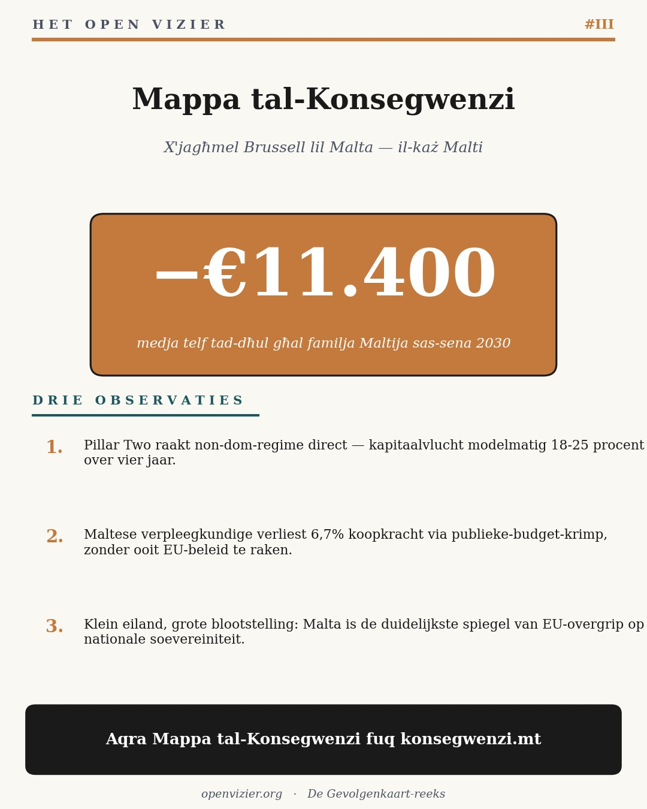

Третий материал серии «Карта последствий». Для Мальты действует наиболее острая асимметрия: она достаточно мала, чтобы каждая директива ЕС была национальным потрясением, и достаточно велика, чтобы находиться внутри системы, принимающей эти директивы.
Mappa tal-Konsegwenzi
Мальтийская политика + давление ЕС к 2030 году
Jacobus van Merksteijn · Мальта, июнь 2026

Инфографика из коммуникационного набора — ключевой показатель для Мальты. Полные двадцать сценариев появятся на konsegwenzi.mt, как только платформа заработает.
Что делает Мальту уникальной
Асимметрия — полмиллиона жителей, но полностью внутри системы, принимающей директивы ЕС. Каждая директива — национальное потрясение; ни одну нельзя избежать.
Три инструмента ЕС накапливаются — Pillar Two демонтирует структуру non-dom, CBAM затрагивает промышленные входные материалы, Пакт о миграции меняет абсорбционный потенциал микрогосударств.
Mappa — не призыв к Mexit — а призыв к иным отношениям. Мальта как канарейка в угольной шахте перецентрализации ЕС.
Публицистический материал
Why Malta loses €11,400 per family by 2030 (Почему Мальта теряет €11 400 на семью к 2030 году)
**Заголовок: Why Malta loses €11,400 per family by 2030 --- and what the vote can still change** *(Почему Мальта теряет €11 400 на семью к 2030 году — и что ещё может изменить голосование)*
Catarina is a nurse in a Sliema public hospital. She earns eighteen thousand euros a year. She has never met an American client, never invested in a fintech, never voted for anything except Labour. By 2030, the Mappa tal-Konsegwenzi calculates she will lose six point seven percent of her purchasing power --- about twelve hundred euros a year. *(Катарина — медсестра в государственной больнице в Слиме. Она зарабатывает восемнадцать тысяч евро в год. Никогда не встречала американского клиента, никогда не инвестировала в fintech, голосовала только за лейбористов. К 2030 году, по расчётам Mappa tal-Konsegwenzi, она потеряет шесть целых семь процента покупательной способности — около двенадцати сотен евро в год.)*
Not because of inflation. Not because of incompetence. Because of a cascade she is too distant from to see: Brussels Pillar Two implementation that drives Maltese non-dom fintech capital toward Texas; reduced corporate tax revenue that shrinks Maltese public spending; nursing budgets cut as a result; her wage and benefits compressed. Three orders down, the bill arrives at her kitchen table. *(Не из-за инфляции. Не из-за некомпетентности. Из-за каскада, который она слишком далека, чтобы видеть: брюссельская реализация Pillar Two гонит мальтийский non-dom fintech-капитал в Техас; сокращение корпоративных налоговых поступлений уменьшает мальтийские государственные расходы; бюджеты здравоохранения сокращаются в результате; её зарплата и льготы сжимаются. Три порядка вниз — и счёт прибывает на её кухонный стол.)*
Catarina is one of twenty scenarios in the Mappa tal-Konsegwenzi, the Maltese sister-piece of the Gevolgenkaart series. It uses the same three-order cascade model --- direct, macro, cascade --- applied to twenty Maltese cases: a non-dom fintech professional, a construction worker, a cruise-tourism operator, a pensioner in Mellieha, a graduate emigrant in Berlin, and so forth. The picture is uniformly red, except for one column. *(Катарина — один из двадцати сценариев Mappa tal-Konsegwenzi, мальтийского сопутствующего издания серии Gevolgenkaart. Он использует ту же трёхпорядковую каскадную модель — прямую, макро, каскад — применённую к двадцати мальтийским случаям: non-dom-специалист в fintech, строительный рабочий, оператор круизного туризма, пенсионер в Мельехе, выпускник-эмигрант в Берлине и так далее. Картина равномерно красная, за исключением одной колонки.)*
What stands out about Malta is its asymmetric exposure. With only half a million people, Malta is small enough that every EU directive lands as a major national shock --- but large enough to be inside the system that decides those directives. Pillar Two does not affect a Maltese household directly; it affects Maltese corporate tax structure, which affects state revenues, which affects nursing wages. The same logic applies to CBAM, to Fit-for-55, to the Migration Pact, to NGEU expenditure rules. Five EU instruments stack on the Maltese household. *(Что выделяет Мальту — её асимметричная уязвимость. При населении всего в полмиллиона Мальта достаточно мала, чтобы каждая директива ЕС обрушивалась как крупное национальное потрясение, — но достаточно велика, чтобы находиться внутри системы, принимающей эти директивы. Pillar Two напрямую не затрагивает мальтийское домохозяйство; он затрагивает мальтийскую структуру корпоративного налогообложения, которая влияет на государственные доходы, которые влияют на зарплаты медсестёр. Та же логика применима к CBAM, к Fit-for-55, к Пакту о миграции, к правилам расходования средств NGEU. Пять инструментов ЕС накапливаются на мальтийском домохозяйстве.)*
What this means for the political question is uncomfortable. The traditional Maltese political debate is between Labour and Nationalist. The Mappa tal-Konsegwenzi shows that --- under current Brussels parameters --- both produce nearly identical third-order outcomes for households like Catarina's. A Labour government tries to soften the blow through public-sector wage increases; a Nationalist government tries to soften the blow through corporate tax stability. Both lose the model arithmetic by 2030. *(Что это означает для политического вопроса — неудобно. Традиционная мальтийская политическая дискуссия идёт между лейбористами и националистами. Mappa tal-Konsegwenzi показывает, что — при нынешних брюссельских параметрах — оба производят почти идентичные результаты третьего порядка для домохозяйств, подобных домохозяйству Катарины. Правительство лейбористов пытается смягчить удар повышением зарплат в государственном секторе; правительство националистов — стабильностью корпоративного налогообложения. Оба проигрывают в модельной арифметике к 2030 году.)*
This is not a critique of PL or PN. It is a critique of the corridor in which they operate. The Maltese government, like the Dutch and German and Italian, executes Brussels policy more than it makes its own. Roughly seventy percent of new Maltese law in 2024 was direct transposition of EU directives. The Maltese parliament debates how to implement, not whether. *(Это не критика PL или PN. Это критика коридора, в котором они действуют. Мальтийское правительство, как и нидерландское, немецкое и итальянское, исполняет брюссельскую политику больше, чем создаёт свою собственную. Примерно семьдесят процентов нового мальтийского законодательства в 2024 году было прямым транспонированием директив ЕС. Мальтийский парламент дискутирует о том, как реализовывать, — но не о том, реализовывать ли.)*
The Mappa tal-Konsegwenzi does not propose to leave the EU. That would be economically catastrophic and politically impossible. What it proposes is a different relationship: Malta as the canary in the coal mine of EU overcentralization. Malta has, by virtue of its size, the moral standing to say what Germany cannot: that the Pillar Two implementation as currently designed is not in the interest of smaller members; that the CBAM as currently designed punishes peripheral economies; that the Migration Pact distribution does not respect the existing absorption capacity of microstate societies. *(Mappa tal-Konsegwenzi не предлагает выйти из ЕС. Это было бы экономически катастрофальным и политически невозможным. Она предлагает иные отношения: Мальта как канарейка в угольной шахте перецентрализации ЕС. Мальта, в силу своих размеров, имеет моральное право сказать то, чего не может Германия: что реализация Pillar Two в нынешнем виде не отвечает интересам малых государств-членов; что CBAM в нынешнем виде наказывает периферийные экономики; что распределение по Пакту о миграции не учитывает существующий абсорбционный потенциал микрогосударств.)*
The reference column in the Mappa --- labeled Nova Democratia / VMP --- assumes exactly such a relationship. Malta argues vocally inside Brussels for a renegotiation of Pillar Two with a competitive European bandwidth (fifteen to twenty-five percent corporate tax with productivity deductions). Malta refuses the binding distribution mechanism of the Migration Pact and instead argues for selective inflow based on contribution-capacity. Malta keeps its bilateral relationships with London and Washington alive as leverage. Under this scenario, Catarina actually gains six point seven percent purchasing power by 2030, instead of losing it. *(Референсная колонка Mappa — под названием Nova Democratia / VMP — предполагает именно такие отношения. Мальта громко выступает внутри Брюсселя за пересмотр Pillar Two с конкурентоспособным европейским диапазоном (корпоративный налог от пятнадцати до двадцати пяти процентов с производственными вычетами). Мальта отказывается от обязательного механизма распределения Пакта о миграции и вместо этого выступает за избирательный приток по вкладному потенциалу. Мальта сохраняет двусторонние отношения с Лондоном и Вашингтоном как рычаг. В этом сценарии Катарина к 2030 году фактически получает шесть целых семь процента покупательной способности — вместо того чтобы их терять.)*
This is a model output. It is not a guarantee. It assumes coordinated political courage that small countries rarely sustain. But it is the only column that ends in green --- meaning that without that column, the only available trajectories are degrees of red. *(Это результат модели. Это не гарантия. Он предполагает скоординированную политическую смелость, которую малые страны редко способны поддерживать. Но это единственная колонка, заканчивающаяся зелёным — а значит, без неё доступные траектории — лишь степени красного.)*
The Maltese voter therefore faces a more interesting question than 'PL or PN'. The question is: 'PL or PN --- within which Brussels relationship?' The Mappa tal-Konsegwenzi makes that meta-question visible for the first time, with numbers attached. Read the full piece at konsegwenzi-dot-mt. Then vote. *(Мальтийский избиратель, следовательно, стоит перед более интересным вопросом, чем «PL или PN». Вопрос звучит: «PL или PN — при каких отношениях с Брюсселем?» Mappa tal-Konsegwenzi впервые делает этот мета-вопрос видимым — с числами. Читайте полный материал на konsegwenzi.mt. Затем голосуйте.)*

Якобус ван Мерстеин
Главный редактор Het Open Vizier. Предприниматель, разработчик промышленных и управленческих инноваций (Carbon-Alert Ltd, TerraClean Ltd, GuardSkin Ltd). Пишет об экономических, экологических и политических системных вопросах, опираясь на опыт работы с брюссельским и гаагским аппаратами принятия решений.